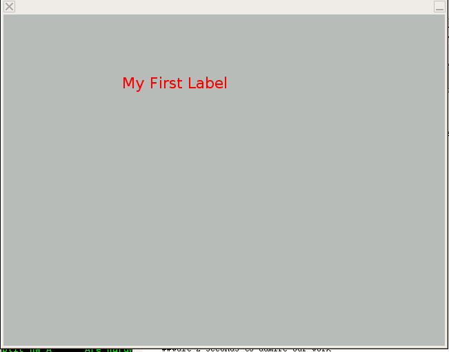

PEBL Experiment Tutorial
How to write an experiment in PEBL
Shane T. Mueller, Ph.D.
ABSTRACT
This document walks a beginner step-by-step through creating a simple experiment with PEBL.
INTRODUCTION
First, you must install PEBL on your computer. Precompiled
versions are available for Windows and OSX, and the source code is
available for compiling and using on Linux. Assuming you have
compiled and/or installed PEBL on your computer, there are a few basic
things you should know:
- PEBL is a compiler/interpreter. It reads a text
file full of commands that define an experiment (often referred to as
the experiment script, or experiment program). When PEBL is
launched, it reads the text program into an intermediate node tree by
through a process called a parser. Once parsed, it executes
the operations in this tree. This translation to a new form
is called compiling, which makes PEBL a compiler. It does not
compile to machine code, or perform any optimization steps, but it
intermediate code structure makes the execution very
efficient.
- PEBL is designed to involve a minimum of knowledge in order
to design an experiment. It eschews many powerful
and complex computing paradigms in favor of being simple enough for a
psychology student to use.
- There are, however, a few things you must learn to create
an experiment.
BASICS
A basic PEBL script file requires just a few things. First,
you need a primary function which the experiment starts with.
This must be called Start.
Functions are defined using the define keyword:
define
Start(parameter)
{
}
This defines a basic function. All functions must start with
a Capital letter, and may contain a list of parameters that need to be
called when the function is executed. Start is
unique in that it requires a single parameter, which gets bound to a
list of command-line arguments passed in. Note that
the variable parameter starts with a lowercase letter: all variables
begin with lowercase letters. After the first letter in a
function or variable, PEBL is case insensitive, meaning that parameter
and paraMeter refer to the same thing.
Functions are interesting because they execute a set of PEBL
operations when called. These operations go in between the { and the }.
One of the simplest things you might want to do is to compute some
mathematical expression. PEBL uses fairly typical math
expression symbols, and shouldn't be difficult to figure out.
For example:
define
Start(parameter)
{
(33 + 2425)/ 325
}
Computes the value of a complicated expression. You can run
this program, but nothing will happen. PEBL will compute the
expression on the first line, and then exit when it comes to the end of
the program. The simplest way to display the results
is to use the Print()
function. Print writes a value to a special stream called
'standard out'. On Linux and Mac, this gets displayed
directly on the command line. On windows, it gets sent to a
file called stdout.txt that will appear in the working directory when a
script is run (usually the directory that the launcher starts in).
So:
define
Start(parameter)
{
Print((33 + 2425)/ 325)
}
Remember, Print is a function,
and so must start with a capital letter. This will print out
the value '7.56308'.
MULTIPLE COMMANDS
What if you want your program to do more than one thing?
Well, just follow the first command with another one on a new
line. They will be executed in sequence. There is
no need for a line-end character--PEBL automatically ends a complete
statement when the line ends. When a new line happens in the
middle of an incomplete statement, PEBL ignores the line break.
However, if you want to put multiple statements on a line,
you can use the ;
character as a virtual line break.
define
Start(parameter)
{
Print((33 + 2425)/
325)
Print("Hello World"); Print("Goodbye World")
}
FUNCTIONS
As discussed earlier, you can define and call your own
functions, as well as the ones pre-defined by PEBL. In fact,
many of the functions available in PEBL are written in PEBL itself.
Functions can be placed in the same text file you put your Start function,
or can be placed in other files, and loaded by the interpreter.
To review, a function is defined with the define keyword,
and must start with an uppercase letter. But, functions can
return values, using the return
keyword:
define
Start(parameter)
{
Print(Average(3526,3))
}
define Average(a, b)
{
return (a + b) / 2
}
This prints out 1764.5
VARIABLES
Often, you want to save the results of a command for use later.
This can be done by assigning the result to a variable.
There are two types of variables: local and global.
Local variables are available only in the current function,
and disappear afterward. Global variables are available to
all functions. Every variable beginning with a 'g' is treated
as a global variable, and all others are local. To assign a
value to a variable, use the two-character assignment symbol: '<-'
define
Start(parameter)
{
gMessage <- "Global Text"
mu <- Average(3526, 3)
Print(mu)
}
define Average(a, b)
{
Print(gMessage)
return (a + b) / 2
}
This prints out:
Global Text
1764.5
LISTS
So far, we have seen how to deal with a single data object,
like a number or a text string. PEBL relies on a lists to
represent sequences of data. The primary aspects of a list are
that it is very cost-efficient to add things to and manipulate. You do
not need to know the length of the list before you create it--you can
simply add all the items you need to it. The drawback is that it
is inefficient to access arbitrary indexes in the middle of the
list--you need to walk through the whole list to get to it. In
the future, other sequences will be available, but so far, lists are
quite sufficient for nearly all experimental tasks.
Lists are defined with the [] brackets:
data <- [23454, 21352, 253213]
Anything can appear in a list, even variables and things of different types:
data2 <- [data, "second item", 33526.6]
List items can be individually accessed with functions First(), Last(), and Nth().
They can be shuffled and used to design experiments with a large
range of other functions. To access each item in a list
iteratively and efficiently, use the loop construct.
define
Start(parameter)
{
list <- Shuffle(["A", "B", "C", "D", "E"])
loop(i, list)
{
Print(i)
}
}
Which produces output like:
D
A
E
C
B
DESIGNING AN EXPERIMENT
These are nice demonstrations, but they don't appear to
have a lot to do with creating an experiment. How does one go
about that?
PEBL has a well-developed and easy-to-use set of objects that can be
created and manipulated with function, and together with the
above basics, can be used to build experiments. A full
reference of the functions is available in the PEBL manual.
The first important object necessary is a window. Creating a
window allows you to display graphical objects, and can be set to be
fullscreen (for final experiments) or in a window (for design).
Windows are created with the function MakeWindow(). Windows
have a base background color, and this can be set in the function: MakeWindow("black") creates
a window with a black background. A blank window is not of
much use, however--you need things to display on it. The
function MakeLabel() creates a one-line text object which would be a good stimulus, but it needs to font to be defined, using the MakeFont()
function. Similarly, MakeFont needs to know what the foreground
and background colors need to be, which are defined with the MakeColor() function.
Once an graphical object like a label is created, it must be added to
the window, and should be moved to an interesting place. In order
for a set of drawing commands to show up on the screen, you must issue
the Draw() function which does the final rendering.
Finally, if you want to look at what is happening, you might want
to wait a while, which can be done with the Wait() function.
So, an annoted script for all these things is:
define Start (par)
{
## Colors can be defined by color names. There are hundreds of valid
## color names. They may also be defined by RGB colors.
red <- MakeColor("red")
bg <- MakeColor("grey")
#Fonts are defined by a series of arguments:
# Vera.ttf is a font that comes with PEBL.
# 0 is the style, meaning plain
# 22 is the font size, in points.
# red is the foreground color
#bg is the background color, which should match the window.
# 1 tells PEBL to render this text anti-aliased
font <- MakeFont("Vera.ttf",0,22,red, bg,1)
label <- MakeLabel("My First Label", font)
gWin <- MakeWindow("grey")
#To display a label, it must be added to the window.
AddObject(label,gWin)
##Move it to an interesting place
Move(label, 250,100)
##Draw everything
Draw()
##Wait 2 seconds to admire our work
Wait(2000)
}
This program produces something like this:

and stays up for 2 seconds before disappearing. Now this is getting closer to an experiment!
THE TASK
Suppose we want to create a simple experiment where some text is
displayed on the screen, and the subject must decide whether the text
is a word or not (This is called the lexical decision task). For
this, we need to define a list of words and a list of nonwords, create
a function that displays the stimuli and collect the response, and then
records the data.
TRIALS, BLOCKS, DESIGN
To begin, lets assume that the function Trial() defines
everything that needs to be done during a trial. All it needs to
know is what stimulus should be presented, and whether it is a
word or nonword. Then, all we need is a Start() function that sets up the display device, defines the stimuli, and calls trial for each stimulus.
define Start(par)
{
#############################
## First, set up the basic display stuff.
#############################
red <- MakeColor("red")
bg <- MakeColor("grey")
font <- MakeFont("Vera.ttf",0,22,red, bg,0)
#define gLabel and gWin global so that Trial can use them.
gLabel <- MakeLabel("+", font)
gWin <- MakeWindow("grey")
AddObject(gLabel, gWin)
Move(gLabel,300,200)
#############################
## Now, create the stimuli
#############################
words <- ["every","good","boy","does","fine",
"esery","rood","loy","noes","kine"]
cond <- [1,1,1,1,1,2,2,2,2,2]
##combine them into a single list with sublists containing a word and a condition
stim <-Transpose([words,cond])
## Shuffle the stimuli into a random order
stim <- Shuffle(stim)
## Go through the stimuli one-by-one
loop(s,stim)
{
Trial(First(s), Last(s))
}
}
define Trial(stimulus, condition)
{
#To be defined later.
Print(stimulus + " " + condition)
}
Running this script will produce something like this:
every 1
good 1
rood 2
fine 1
does 1
kine 2
esery 2
loy 2
noes 2
boy 1
Now, we need to define Trial to do the task. Since gLabel already exists and has been added to gWin, all we need to do is change the text of gLabel.
define Trial(stimulus, condition)
{
SetText(gLabel,stimulus)
Draw()
}
This will display each of the ten stimuli very briefly (probably just a
single refresh cycle) and then finish. So far, so good. We
need a way to allow the participant to generate a response. We
can use the function WaitForListKeyPress() for that. WaitForListKeyPress()
allows you to specify a list of 'legal' keypresses, and waits until one
of those keys is pressed before returning. It returns the value
of the key pressed. The following modification:
define Trial(stimulus, condition)
{
SetText(gLabel,stimulus)
Draw()
response <- WaitForListKeyPress(["Y","N"])
Print(stimulus + " " + condition + " " + response )
}
Produces output like this:
esery 2 y
rood 2 n
every 1 y
kine 2 n
fine 1 y
does 1 y
boy 1 y
good 1 y
noes 2 n
loy 2 n
This is useful, because it is close to what we want to save as data. Now, how about the response times? Use GetTime() to find out when things happen.
define Trial(stimulus, condition)
{
SetText(gLabel,stimulus)
Draw()
start <- GetTime()
response <- WaitForListKeyPress(["Y","N"])
end <- GetTime()
rt <- end - start
Print(stimulus + " " + condition + " " + response + " " + rt )
}
This is nice, but suppose we have a subject number we want saved in the
data file, and a trial number? We can pass these into the Trial
function, or just write this stuff out in the outer loop:
define Start(par)
{
## Execute pebl with the -v command-line to specify subject number
## If no -v option produced, the code below sets subnum arbitrarily to 0
if(IsList(par))
{
subnum <- First(par)
} else {
subnum <- 0
}
#############################
## First, set up the basic display stuff.
#############################
red <- MakeColor("red")
bg <- MakeColor("grey")
font <- MakeFont("Vera.ttf",0,22,red, bg,0)
#define gLabel and gWin global so that Trial can use them.
gLabel <- MakeLabel("+", font)
gWin <- MakeWindow("grey")
AddObject(gLabel, gWin)
Move(gLabel,300,200)
#############################
## Now, create the stimuli
#############################
words <- ["every","good","boy","does","fine",
"esery","rood","loy","noes","kine"]
cond <- [1,1,1,1,1,2,2,2,2,2]
##combine them into a single list with sublists containing a word and a condition
stim <-Transpose([words,cond])
## Shuffle the stimuli into a random order
stim <- Shuffle(stim)
trial <- 1
## Go through the stimuli one-by-one
loop(s,stim)
{
Print_(subnum + " " + trial + " ")
Trial(First(s), Last(s))
trial <- trial + 1
}
}
This produces output like:
0 1 boy 1 y 1401
0 2 fine 1 n 848
0 3 good 1 n 392
0 4 rood 2 y 293
0 5 does 1 n 272
0 6 esery 2 y 166
0 7 loy 2 n 237
0 8 kine 2 y 359
0 9 noes 2 n 307
0 10 every 1 y 387
Finally, suppose we want to save this text into a file, rather than just outputting it. We can open a file using the FileOpen() command, and write to it using the FilePrint() and FilePrint_() commands. I've also added a few other tweaks to make it a nicer experiment.
define Start(par)
{
## Execute pebl with the -v command-line to specify subject number
## If no -v option produced, the code below sets subnum arbitrarily to 0
if(IsList(par))
{
subnum <- First(par)
} else {
subnum <- 0
}
#############################
## First, set up the basic display stuff.
#############################
red <- MakeColor("red")
bg <- MakeColor("grey")
font <- MakeFont("Vera.ttf",0,22,red, bg,0)
#define gLabel and gWin global so that Trial can use them.
gLabel <- MakeLabel("Press 'y' or 'n' keys for words and nonwords", font)
gWin <- MakeWindow("grey")
AddObject(gLabel, gWin)
Move(gLabel,300,200)
Draw()
Wait(2000)
gFileOut <- FileOpenWrite("data.txt")
#############################
## Now, create the stimuli
#############################
words <- ["every","good","boy","does","fine",
"esery","rood","loy","noes","kine"]
cond <- [1,1,1,1,1,2,2,2,2,2]
##combine them into a single list with sublists containing a word and a condition
stim <-Transpose([words,cond])
## Shuffle the stimuli into a random order
stim <- Shuffle(stim)
trial <- 1
## Go through the stimuli one-by-one
loop(s,stim)
{
FilePrint_(gFileOut,subnum + " " + trial + " ")
Trial(First(s), Last(s))
trial <- trial + 1
}
FileClose(gFileOut)
##Thank them
SetText(gLabel, "Thanks! Press any key to finish.")
Draw()
WaitForAnyKeyPress()
}
define Trial(stimulus, condition)
{
##At the beginning of the trial, make a fixation cross
SetText(gLabel, "+")
Draw()
##wait randomly between 500 and 800 ms
Wait(RandomUniform(300) + 500)
SetText(gLabel,stimulus)
Draw()
start <- GetTime()
response <- WaitForListKeyPress(["Y","N"])
end <- GetTime()
rt <- end - start
FilePrint(gFileOut,stimulus + " " + condition + " " + response + " " + rt )
}
This will save the data into a file called 'data.txt'.
SUMMARY
This document has walked you through the basics of creating a simple
experiment in PEBL. Many more complex functions exist, but if you
understand what was done here, you should be able to make sense of them
from their description in the manual.
Without even consulting the manual, you should be able to modify the script to:
- Use black and white is used instead of grey and red
- Change the position of the stimulus on each trial
- Change the keys used to make responses
- Display the text in a different color on each trial
- Make this a Stroop task, with stimuli named red and green, either in consistent or inconsistent colors
- Compute and report mean accuracy and mean response times to participant during debriefing.
- Give correct/incorrect feedback
- Present both the word and non-word version of each word simultaneously and require a forced-choice response.
More advanced modifications that can be done by consulting the manual might include:
- Repeat incorrect trials at end.
- Repeat the stimuli arbitrary some number of times, specified via the command line.
- Specify the stimuli in a text file that gets read in by
FileReadTable()
- Display detailed instructions and debriefing using
MakeTextBox()